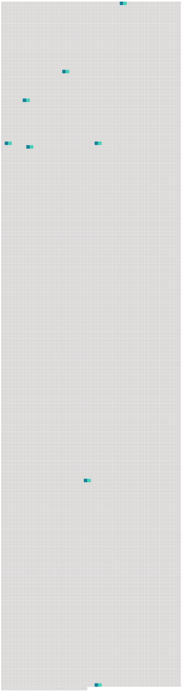

Longueur nb maillons : 8 mentions |
|
Oui, j’ ai aimé comme personne au monde n’ a aimé, d’ un amour insensé et furieux, si violent que je suis étonné qu’ il n’ ait pas fait éclater [mon cœur] [35 phrases] avec un éclair ils décidaient de la destinée d’ un homme ; ils avaient une vie, une limpidité, une ardeur, une humidité brillante que je n’ ai jamais vues à un œil humain ; il s’ en échappait des rayons pareils à des flèches et que je voyais distinctement aboutir à [mon cœur] [9 phrases] Une angoisse effroyable me tenaillait [le cœur] ; chaque minute qui s’ écoulait me semblait une seconde et un siècle. [17 phrases]
» Je me sentais prêt à renoncer à Dieu, et cependant [mon cœur] accomplissait machinalement les formalités de la cérémonie.
La belle me jeta un second coup d’ œil si suppliant, si désespéré, que des lames acérées me traversèrent [le cœur] , que je me sentis plus de glaives dans la poitrine que la mère de douleurs. [157 phrases] » Mais [mon cœur] me répondit avec un battement : « C’ est bien elle, c’ est bien elle. [96 phrases] je n’ aurai jamais [ton cœur] à moi toute seule, moi que tu as ressuscitée d’ un baiser, Clarimonde la morte, qui force à cause de toi les portes du tombeau et qui vient te consacrer une vie qu’ elle n’ a reprise que pour te rendre heureux!! |
 |
Il est possible de télécharger la ressource sur la page Ortolang |
Si vous avez des questions ou vous voyez des erreurs, merci d'envoyer un mail à silvia.federzoni89@gmail.com |